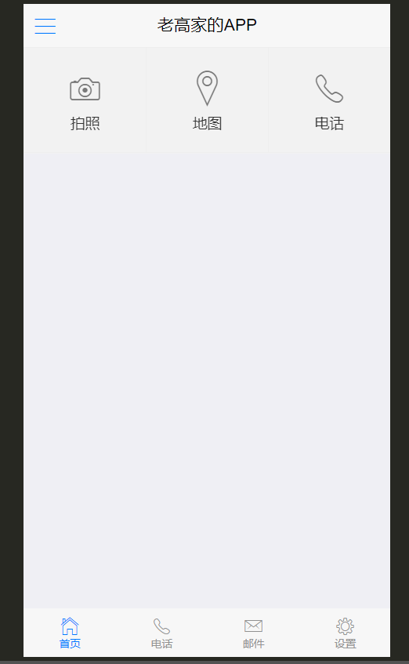

Vue进阶
- 能够实现项目的打包
- 能够说出开发移动App的几种方式
- 能够使用HBuliderX把移动端网站打包成移动App
- 能够说出defineProperty的作用
- 能够说出服务端渲染和客户端渲染的区别
- 理解Nuxt的作用
- 能够理解asyncData的作用
阶段说明和内容介绍
内容介绍
打包app
MVVM实现原理
会带大家 写一个vue.js, 超简易版的vue.js
- Object.defineProperty()方法的使用 proxData
- 发布订阅模式
- 实现MVVM框架
SSR服务端渲染 =>nuxt框架 => 服务端渲染框架
阶段说明
本阶段的内容
MVVM部分在面试环节Vue部分属于重点项、必问点,常见的面试问题:- Vue 数据绑定的原理？
- MVVM 数据绑定的原理？
- Vue 双向数据绑定的原理？
- Vue 数据响应式原理？
- 数据响应式原理？
- 数据驱动视图的原理?
移动App开发的几种方式
同学回答: 感觉就一种 H5
原生App=> 微信/ 支付宝 => 体验 界面审查 流畅度极高 => 开发语言不是h5 安卓 => 安卓 ios =>iosblack黑莓 / window phone / 塞班 / 安卓 系统 => java开发 / ios 系统 => object-c /swift
WebApp=> 黑马头条 => webapp => 移动网站 => H5 =>vuejs/reactjs/angularjs/jquery/原生jsHybridApp=> 混合开发 => 原生(提供端能力 )+ h5(业务功能 + 调用端能力)跨平台开发=> React-Native => 跨平台 ( 安卓/ 苹果/ 黑莓 /塞班 / windows phone )
React-Native 是 facebook推出的 可以一套代码 跑在 安卓系统 和 ios系统的 框架, 它是原生的
Flutter => Flutter 是谷歌推出的跨平台 开发项目, 也是原生 跨 安卓 + ios , 非标签形式
import 'package:flutter/material.dart';
void main() => runApp(new MyApp());
class MyApp extends StatelessWidget {
@override
Widget build(BuildContext context) {
return new MaterialApp(
title: 'Welcome to Flutter',
home: new Scaffold(
appBar: new AppBar(
title: new Text('Welcome to Flutter'),
),
body: new Center(
child: new Text('Hello World'),
),
),
);
}
} 开发模式类似 后端开发
React-Native 遵循 react开发规范的 原生开发 =>状态机(类似 Vue的响应式数据)
import { View, Text } from 'react-native/components'
class App extends React.Components {
// 渲染函数 必须实现 必须返回组件结构 必须有一个根节点
state = {
name: '张三'
}
render () {
let { name } = this.state
return (
{ name }
)
}
}weex => 跨平台框架 ,也可以支持 Vuejs语法规范
跨平台 最重要的是 => 生成的代码不是h5, 而是 对应的原生代码,体验 和原生几乎一样
Reactjs => 遵循react开发规范的H5开发
其他类型(
小程序/快应用等等) 微信 /支付宝 /百度/抖音/头条/qq/钉钉/高德..…快应用

移动App开发-(原生)NativeApp介绍和特点
定义:传统的原生App开发模式，有iOS和Android两大系统，需要各自语言开发各自App。
优点：性能和体验都是最好的, 用的都是本系统的原生组件,没有网络渲染问题
缺点：开发和发布成本高 => 需要专业的安卓 和 ios开发人员 ios 系统 闭环 , 应用上传appStore
微信会推出小程序? ios把握着应用命脉 16
支付宝 也这么想 17
百度也这么想 17
头条也这么想 18-19
qq 也这么想 18-19
钉钉 也这么想
各大手机厂商也这么想
抖音这么想..
应用技术：Swift，OC，Java
常识: 安卓/iOS/Web 基本都使用Mac进行开发
移动App开发-WebApp介绍和特点
定义: 移动端的网站，常被称为H5应用，说白了就是特定运行在移动端浏览器上的网站应用。一般泛指 SPA(Single Page Application)模式开发出的网站，与MPA（Multi-page Application）对应。
8 / 10 / 12 /15
优点：开发和发布成本最低
开发成本低,可以跨平台,调试方便，开发速度最快
webapp一般只需要一个前端人员开发出一套代码,然后即可应用于各大主流
浏览器(特殊情况可以代码进行下兼容),没有新的学习成本,而且可以直接在浏览器中调试维护成本低
同上,如果代码合理,只需要一名前端就可以维护多个web app
更新最为快速
由于web app资源是直接部署在服务器端的,所以只需要替换服务器端的文件,用户访问是就已经更新了(当然需要解决一些缓存问题)
无需安装App,不会占用手机内存
通过浏览器即可访问,无需安装,用户就会比较愿意去用
缺点：性能和体验不能讲是最差的，但也受到浏览器处理能力的限制
性能低,用户体验差
由于是直接通过的浏览器访问,所以无法使用原生的API,操作体验不好
依赖于网络,页面访问速度慢,耗费流量
Web App每次访问都需要去服务端加载资源访问,所以必须依赖于网络,而且网速慢时访问速度很不理想,特别是在移动端,如果网站优化不好会无故消耗大量流量
功能受限,大量功能无法实现
只能使用Html5的一些特殊api,无法调用原生API,所以很多功能存在无法实现情况
临时性入口,
用户留存率低, 这个几乎是不可原谅的这既是它的优点,也是缺点,优点是无需安装,缺点是用完后有时候很难再找到,或者说很难专门为某个web app留存一个入口,导致用户很难再次使用
应用技术：ReactJS，AngularJS，VueJS等等
移动App开发-HybridApp介绍和特点
WebView => 原生浏览器的内置浏览器
定义:混合模式移动应用，介于Web App、Native App这两者之间的App开发技术，兼具“Native App良好交互体验的优势”和“Web App跨平台开发的优势” ,原生客户端的壳WebView，其实里面是HTML5的网页
webview 就是一个内置的浏览器 => 里面是我们做的 h5的网页 外面是一个安卓或者 ios的
壳只提供 API,不做具体业务
举例 : 电商app , 所有的业务 都是h5网页, 外面的壳 是安卓或者ios,提供SDK(调用原生能力的包) / 拍照/录像/录音/ h5网页 => js 调用 原生能力
- 把网页打包成移动 App
- 使你的 Web 程序可以访问手机原生能力
优点：开发和发布都比较方便，效率介于Native App、Web App之间
开发成本较低,可以跨平台,调试方便
Hybrid模式下,由原生提供统一的API给JS调用,实际的主要逻辑有Html和JS来完成,而由于最终是放在webview中显示的,所以只需要写一套代码即可,达到跨平台效果,另外也可以直接在浏览器中调试,很为方便
最重要的是只需要一个前端人员稍微学习下JS api的调用即可,无需两个独立的原生人员
一般Hybrid中的跨平台最少可以跨三个平台:Android App,iOS App,普通webkit浏览器
维护成本低,功能可复用
同上,如果代码合理,只需要一名前端就可以维护多个app,而且很多功能还可以互相复用
更新较为自由
混合开发 实际上 就是 安卓的壳 /ios壳 + html/js/css
更新的话 只需要 下载最新的 html+js+css(
本地模式)安卓的壳 /ios壳 + webview(
线上地址)(线上模式) => 更新只需要部署到服务器即可 (性能和效率是比较低)虽然没有web app更新那么快速,但是Hybrid中也可以通过原生提供api,进行资源主动下载,达到只更新资源文件,不更新apk(ipa)的效果 (进入之后
热更新)针对新手友好,学习成本较低
这种开发模式下,只需要前端人员关注一些原生提供的API,具体的实现无需关心,没有新的学习内容,只需要前端人员即可开发22
功能更加完善,性能和体验要比起web app好太多
因为
可以调用原生api,所以很多功能只要原生提供出就可以实现,另外性能也比较接近原生了部分性能要求的页面可用原生实现
H5实现不了的 原生来做
一般来说 壳+html+js+css , 壳+ 部分原生 + html/js+css
这应该是Hybrid模式的最多一个好处了,因为这种模式是原生混合web,所以我们完全可以将交互强,性能要求高的页面用原生写,然后一些其它页面用JS写,嵌入webview中,达到最佳体验
缺点：学习范围较广，需要原生配合
相比原生,性能仍然有较大损耗
这种模式受限于webview的性能桎梏,相比原生而言有不少损耗,体验无法和原生相比
不适用于交互性较强的app
这种模式的主要应用是:一些新闻阅读类,信息展示类的app;但是不适用于一些交互较强或者性能要求较高的app(比如动画较多就不适合)
应用技术：Cordova、APPCan、 DCloud 、API Cloud
一般大公司不会用这些壳,大公司有能力 有资本 有能力自己做原生 自己封装sdk, 比如 支付宝 / 微信 .. 抖音 ./头条
四种方式对比


移动App开发-跨平台开发介绍和特点
特点：使用类似于 Web 技术的方式来开发 Native App。
React Native (原生开发)和 reactjs(h5开发)是两回事 => 同时都用jsx语法 ,都用react语法规范 状态机 state (React) Vue (data)
定义: Facebook发现Hybrid App存在很多缺陷和不足，于是发起开源的一套新的App开发方案React Native。使用JSX语言写原生界面，js通过JSBridge调用原生API渲染UI交互通信。
import React from 'react'
import Menu from 'menu'
// 定义一个组件叫App react 16.8之前的语法
class App extends React.Component {
// render函数 渲染方法 要求必须返回一个元素 元素只能有且只有一个根节点
// 标签 闭合标签 和 js逻辑混写
// state
state = {
name : '张三'
}
changeName () {
// this.name = '李四'
// 改变张三为李四
this.setState({
name: '李四'
})
}
render () {
return <div>
<p> { this.state.name } </p>
<button onClick={this.changeName.bind(this)}>改变name</button>
<Menu />
</div>
}
}
// 16.8之后 推出了函数式的组件 react hooksReact-Native 就是用js的方式 去开发 原生应用那个 一套代码 安卓/ios上面
招人的 时候 会说 => 招聘 React-Native工程师, 具备安卓和ios 相关一些背景, Android Studio / XCode
优点：效率体验接近Native App，发布和开发成本低于Native App
虽然说开发成本大于Hybrid模式,但是小于原生模式,大部分代码可复用
相比于原生模式,这种模式是统一用JS写代码,所以往往只需要一名成员投入学习,即可完成跨平台app的开发,而且后续代码封装的好,很多功能可复用
性能体验高于Hybrid,不逊色与原生
这种模式和Hybrid不一样,Hybrid中的view层实际上还是dom,但是这种模式的view层是虚拟dom,所以性能要高于Hybrid,距离原生差距不大
这种模式可以认为是用JS写原生,即页面用JS写,然后原生通过Bridge技术分析JS,将JS内容单独渲染成原生Android和iOS,所以也就是为什么性能不逊色原生
开发人员单一技术栈,一次学习,跨平台开发
这种模式是统一由JS编写,有着独特的语法,所以只需要学习一次,即可同时开发Android和iOS
社区繁荣,遇到问题容易解决
这应该是React Native的很大一个优势,不像Hybrid模式和原生模式一样各自为营,这种模式是Facebook统一发起的,所以有一个统一的社区,里面有大量资源和活跃的人员,对开发者很友好
缺点: 学习有一定成本，且文档较少，免不了踩坑
虽然可以部分跨平台,但并不是Hybrid中的一次编写,两次运行那种,而是不同平台代码有所区别
这种模式实际上还是JS来写原生,所以Android和iOS中的原生代码会有所区别,如果需要跨平台,对开发人员有一定要求
当然了,如果发展了有一定时间,组件库够丰富了,那么其实影响也就不大了,甚至会比Hybrid更快
开发人员学习有一定成本
虽然社区已经比较成熟了,但是一个新的普通前端学习起来还是有一定学习成本的,无法像Hybrid模式一样平滑
学习成本大，对开发人员技术要求比较高
不懂原生开发很难驾驭好
说是使用 Web 技术进行开发，还是多少得学点儿原生 App 开发，才能处理好跨平台。
前期投入比较大，后劲很足。
应用技术 :
React Native（主流）
- 公司：Facebook
- 技术栈：React
- 基于React开发App的框架RN
其他技术:
Weex（使用不多）
- 公司：Apache 开源基金会
- Vue.js 技术栈
- 基于Vue开发App的框架WEEX
Flutter（未来趋势）
- 公司：Google
- 它提供了官方的原生 UI 组件
- 比 RN、Weex 之类的体验更好 =>代码 不像前端代码 => 代码更接近于后端
- 开发语言：Dart（和 JavaScript 很像）
- 商业应用：闲鱼
移动App开发-其他类型App
小程序
微信小程序
百度小程序
头条小程序
支付宝小程序
快应用 … 10大手机厂商推出的
本质
混合开发 + 微信搞了一套 微信小程序的开发规范 => vue /react
混合开发 + 支付宝搞了一套微信小程序的开发规范
统一开发平台
- taro(京东)->坑多 趋势很好 是有react 为基础的开发语言规范
- uni-app 是以 vuejs为基础开发语言规范
一套代码 开发多套 应用
taro -> 是以 React为语法规范 => 只需要写一遍代码 =>对应编译成不同的端
uni-app 是以 vue语法规则
Chameleon 是滴滴的也是 一端多用
mpVue 美团的应用 一端多用
微网页
- 微信公众号 /在微信中嵌入了h5页面
- 百度直达号 /在百度中嵌入了h5页面
- 。。。
快应用
9大手机厂商 => 联合推出 了一个标准 =>体验接近原生 => 但是坑巨多,流量巨少
- 各大手机厂商联合制定推出的一种方式，类似于小程序
- 使用 Web 技术进行开发， 而且提供了在 Web 中访问手机硬件等底层交互的 API
- 属于混合 App 的一种方式
PWA（网站离线访问技术，没有 iPhone 不参与）
- 它可以让网站拥有一个类似于 App 的入口
- 提供了网站的离线应用访问
- Google 在推动
- 手机端目前只能在 安卓手机的 Chrome 浏览器运行
移动App开发-开发模式对比和选择
各大开发模式对比
| Native App | Web App | Hybrid App | React Native App | |
|---|---|---|---|---|
| 原生功能体验 | 优秀 | 差 | 良好 | 接近优秀 |
| 渲染性能 | 非常快 | 慢 | 接近快 | 快 |
| 是否支持设备底层访问 | 支持 | 不支持 | 支持 | 支持 |
| 网络要求 | 支持离线 | 依赖网络 | 支持离线(资源存本地情况) | 支持离线 |
| 更新复杂度 | 高(几乎总是通过应用商店更新) | 低(服务器端直接更新) | 较低(可以进行资源包更新) | 较低(可以进行资源包更新) |
| 编程语言 | Android(Java),iOS(OC/Swift) | js+html+css3 | js+html+css3 | 主要使用JS编写,语法规则JSX |
| 社区资源 | 丰富(Android,iOS单独学习) | 丰富(大量前端资源) | 有局限(不同的Hybrid相互独立) | 丰富(统一的活跃社区) |
| 上手难度 | 难(不同平台需要单独学习) | 简单(写一次,支持不同平台访问) | 简单(写一次,运行任何平台) | 挺等(学习一次,写任何平台) |
| 开发周期 | 长 | 短 | 较短 | 中等 |
| 开发成本 | 昂贵 | 便宜 | 较为便宜 | 中等 |
| 跨平台** | 不跨平台** | 所有H5浏览器 | Android,iOS,h5浏览器** | Android,iOS |
| APP发布 | App Store | Web服务器 | App Store | App Store |
如何选择开发模式
目前有多种开发模式,那么我们平时开发时如何选择用哪种模式呢？如下
- 选择纯Native App模式的情况
性能要求极高,体验要求极好,不追求开发效率
一般属于吹毛求疵的那种级别了,因为正常来说如果要求不是特别高,会有Hybrid
选择Web App模式的情况
不追求用户体验和性能,对离线访问没要求
正常来说,如果追求性能和体验,都不会选用web app
没有额外功能,只有一些信息展示
因为web有限制,很多功能都无法实现,所以有额外功能就只能弃用这种方案了
- 选择Hybrid App(混合开发)模式的情况
大部分情况下的App都推荐采用这种模式
这种模式可以用原生来实现要求高的界面,对于一些比较通用型,展示型的页面完全可以用web来实现,达到跨平台效果,提升效率
当然了,一般好一点的Hybrid方案,都会把资源放在本地的,可以减少网络流量消耗
选择React Native App模式的情况
追求性能,体验,同时追求开发效率,而且有一定的技术资本,舍得前期投入
React Native这种模式学习成本较高,所以需要前期投入不少时间才能达到较好水平,但是有了一定水准后,开发起来它的优势就体现出来了,性能不逊色原生,而且开发速度也很快
选择其它方案
- 小程序（目前移动 App 中开发难度最低的，体验也是仅次于原生+跨平台NativeApp）
HTML5+介绍-HBuliderX安装和完整示例项目
DClound是什么? HTML5+又是什么?
DCloud面向HTML5行业分别推出了开发工具HBuilder、手机强化引擎5+ Runtime、前端框架mui，通过系列产品对HTML5的强化支持，使得HTML5能达到原生的功能和体验，同时在发行上更优于原生应用。
这里
Hbuilder是开发工具,mui是前端UI框架(类似于vant),但不是Vue技术栈,5+ Runtime是 一个手机强化引擎, 相当于一个强化版的webview(让浏览器拥有了原生的能力) 拍照/录音/二维码 …
DClound做了很多事情, 开发工具, 前端框架, 浏览器引擎,我们通过一个例子来认识它
接下来 ,我们希望完成一个轻量
混合应用的开发,混合应用即 H5 + 原生, 但是我们并没有 原生SDK,这个时候就可以借助5+ RunTime来做, 那么我们的界面 恰好可以用 它专属的mui来布局设计OK, 那么接下来,我们尝试 在
HBuilderX中,开发一个混合应用,利用mui做布局,利用5+ RunTime提供原生能力
开始!
第一步, 我们需要先下载HbuilderX开发版
第二步, 我们创建一个项目,但是我们创建项目的时候,惊呆了!因为Hbuilder可以创建 各种类型的项目
简单说一下:
普通项目 => 普通H5项目, Hbuilder内置了几套模板,作用不大,同学们基本都会自己创建
uni-app => 多端应用,一套代码,复用八端,时下最火的一个跨端框架
wap2App =>wap项目转 App , 原来只运在手机上的wap(无线网络协议,诺基亚,爱立信时代)项目 可转app项目
5+ App => 利用DCloud 的
5+ Runtime来做原生能力提供者的 项目小程序 => 微信原生小程序的另外一个编辑器,比微信提供的开发者工具好用,但是现在谁还在用原生写小程序呢?
快应用 => 原生快应用 编辑器 , 较为冷门的生态, 目前不太热闹
我们要选择5+App 项目,我们说了要用 mui前端框架,所以选择一个mui项目
第三步,项目创建好之后,我们着手对界面进行设计和开发, mui文档
hbuilderx提供了很多简单快速的快捷键,我们简单学习两个即可,在body中输入
moffcanvas,会给出 mui几套基础界面的提示 我们随便选择一个moffcanvas(侧滑导航,主界面,菜单同时移动)
第四步 ,我们在页面中输入一个九宫格
mGrid, 然后 把图标换成 拍照 / 地图 / 电话 / 信息

OK,我们经过几步 完成了这样一个页面,注意,我们的目的并不是学习mui,而是体验DCloud,这个世界上的前端框架何止几百种,永远是学不完的,开发只会用一种前端UI, 我们通过对于这个示例的学习进而了解 混合开发
我们的界面搭建完毕, 接下来我们要尝试去调用摄像头 和 地图 以及电话
HBuliderX 中 5+RunTime的使用和测试
我们已经完成了H5页面, 我们知道混合开发其实是 H5 + 原生能力,现在H5有了,原生能力在哪?
老高告诉你,
你已经有了原生能力!
what ?Are you Kidding me?没错! 我们创建的项目是 5+ Runtime, 这个项目本身就自带原生能力的, 究其原因就是因为 我们的项目中多了一个文件
manifest.json说明地址,该文件是一个w3c的webapp配置文件HbuilderX 给我们的页面中注入了个全局对象
plus, 这个plus就是我们的原生能力我们可以在页面中监听plus初始化完成的事件
document.addEventListener('plusready', function(){
console.log('原生能力准备好了')
})在模拟器/真机测试
接下来,我们尝试在模拟器或者真机中运行 我们写好的程序. 如果你没有安卓手机, 那么你只能选择模拟器来测试
这里推荐一个夜神模拟器,值得注意的是,我们需要把HbuilderX的安卓调试设置为62001,否则将不能连接

真机调试,需要将手机的开发者选项打开,并且启动usb调试,
注意必须采用数据线连接
在选中当前项目的情况下 , 在 HBuilder 中找到：运行 -> 运行到手机或模拟器 -> 你的设备
HBuilder/HBuilderX真机运行、手机运行、真机联调常见问题
开发简单的几个小功能
第一步,我们想拍张照片然后放在页面上, 刚说了
plus是我们的原生能力,怎么调摄像头拍照?拍照代码
var takePhoto = function (){ var carmera = plus.camera.getCamera(1) // 获取主摄像头对象 carmera.captureImage(function(url){ // 注意这个地址不能用 需要转化 // 需要将相对手机路径变成绝对路径 let absoluteUrl = plus.io.convertLocalFileSystemURL(url) // 我们把地址放到一个新的图片上 document.getElementById("myImg").src = absoluteUrl }) }
第二步,我们进行地图的定位, 我们希望做一个 在高德地图中 显示
黑马校区位置的 功能
地图代码 => 我们单独新建一个页面 map.html 专门放置 地图导航
地图页面的模板
<!doctype html> <html> <head> <meta charset="utf-8"> <title></title> <meta name="viewport" content="width=device-width,initial-scale=1,minimum-scale=1,maximum-scale=1,user-scalable=no" /> <link href="css/mui.css" rel="stylesheet" /> <style type="text/css"> #app { width: 100%; position: fixed; top: 0; left:0; height: 100%; background-color: #0062CC; } </style> </head> <body> <script src="js/mui.js"></script> <script type="text/javascript"> mui.init() </script> <div id="app"> 地图加载中... </div> <script type="text/javascript"> // 模拟器没有地图 只能在真机上测试 var initMap = function () { // 初始化地图 var map = new plus.maps.Map("app") // 实例化一个map对象 map.setCenter(new plus.maps.Point(116.635699, 40.169122)) // 设置中心点 } // 下面代码用来保证 执行初始化地图时 plus是一定有值 if(window.plus) { // 如果plus存在表示 此时已经初始化原生能力 结束 initMap() }else{ document.addEventListener("plusready", initMap) } </script> </body> </html>设置坐标点
接下来 ,我们做最后一个功能 打电话 ,就打给 联通客服 10010
直接上代码
// 打电话 var takePhone = function () { plus.device.dial('10086') }
需要注意的是: 地图/电话 这两个功能只能在真机上测试哦
HBuliderX打包开发示例
OK, 我们上一节,做了一个小小的混合应用,这个应用我们想要让别人安装使用, 需要把我们新建的
5+App打包成一个 安卓的apk 或者 苹果的 .ipa
注意: 打包工作
目前不是我们作为前端开发的重点, 只有掌握了精湛的前端技术, 熟练的开发各种移动应用之后,才有可能 有机会 去做类似的工作,所以这里我们尝试去练习,我们的重难点 还在 vue/react 这些技术栈上,而不是把时间放在配置各种乱七八糟的前端打包编译环境上,假以时日,技术成熟,再来搞也不迟
配置mainfest.json文件 , 此文件是配置我们app的各种配置,例如 图标,权限,启动屏
我们设置一个图标 和启动屏幕,具体参照视频操作,
这里
需要特别注意::由于我们用了百度地图功能, 所以打包的时候需要用一个公共的sdk的api_key,需要到百度开发者中心注册一个账号,得到一个地图的key
接下里, 我们进行打包,
在 HBuilder 中找到：发行 -> 原生 App（云打包）
等待一段时间，得到打包结果安装包，然后安装到手机上测试
最后根据需要发布到对应的手机应用商店
注意, 打包本身分两种, 一种本地打包,一种云打包
本地打包需要配置 安卓以及苹果的开发打包环境 安卓本地打包说明
云打包 是把我们的资源提交到DCloud服务器, 由DCloud完成打包
后者 比较简单不需要 环境安装, 我们此次采用云打包方式
一般在企业中还是 本地打包居多,因为谁都不想把自己的开发好的东西提交到别人的服务器
- 云打包提交之后,稍等几分钟, 此时 DCloud 会返回一个下载链接 (只允许下载5次),我们可以下载尝试安装
一切顺利,安装完毕.
虽然成功了, 但是我们也清楚的看到, 打包并不是那么简单,有很多环境,属性细节需要设置 调整.
HBuliderX打包黑马头条
通过HBuliderX将黑马头条项目打包成app,生成apk文件下载安装测试
黑马头条我们已经完成, 此时来讲黑马头条打包成 App
值得注意的是: 我们的黑马头条就是H5, H5就是运行在浏览器中的, 只不过运行在 5+ Runtime这个增强版浏览器里面, 浏览器和 APP的物理按钮并没有进行关联, 也就是 点击手机返回按钮, 浏览器并不会进行返回
所以我们需要在我们的 页面中 对物理返回按键进行一下处理
下面的代码 就是
5+ Runtime的处理物理返回按钮的问题
// 在main.js中添加如下代码 此代码是采用的 5+ Runtime中的plus对象
document.addEventListener('plusready', function () {
var webview = window.plus.webview.currentWebview()
window.plus.key.addEventListener('backbutton', function () {
webview.canBack(function (e) {
if (e.canBack) {
webview.back()
} else {
// webview.close(); //hide,quit
// plus.runtime.quit();
// 首页返回键处理
// 处理逻辑：1秒内，连续两次按返回键，则退出应用；
var first = null
window.plus.key.addEventListener('backbutton', function () {
// 首次按键，提示‘再按一次退出应用’
if (!first) {
first = new Date().getTime()
setTimeout(function () {
first = null
}, 1000)
} else {
if (new Date().getTime() - first < 1500) {
window.plus.runtime.quit()
}
}
}, false)
}
})
})
}) 这个代码注入之后,我们还
缺少一个mainfest.json文件,这个文件我们如何自己创建,里面过多内容根本不知道怎么如何测试!我们直接新建一个
5+App项目 然后,配置好app信息之后,直接将 unpackage(图标)/ mainfest.json(配置文件)拷贝到黑马头条的
public目录下, 打包完成之后 public目录就自动拥有该配置,然后我们打包 dist目录就可以了
最终一切结束, apk 安装到了模拟器或者手机 进行测试吧